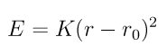

pair_style list command¶
Syntax¶
pair_style list listfile cutoff keyword
- listfile = name of file with list of pairwise interactions
- cutoff = global cutoff (distance units)
- keyword = optional flag nocheck or check (default is check)
Examples¶
pair_style list restraints.txt 200.0
pair_coeff * *
pair_style hybrid/overlay lj/cut 1.1225 list pair_list.txt 300.0
pair_coeff * * lj/cut 1.0 1.0
pair_coeff 3* 3* list
Description¶
Style list computes interactions between explicitly listed pairs of atoms with the option to select functional form and parameters for each individual pair. Because the parameters are set in the list file, the pair_coeff command has no parameters (but still needs to be provided). The check and nocheck keywords enable/disable a test that checks whether all listed bonds were present and computed.
This pair style can be thought of as a hybrid between bonded, non-bonded, and restraint interactions. It will typically be used as an additional interaction within the hybrid/overlay pair style. It currently supports three interaction styles: a 12-6 Lennard-Jones, a Morse and a harmonic potential.
The format of the list file is as follows:
- one line per pair of atoms
- empty lines will be ignored
- comment text starts with a ‘#’ character
- line syntax: ID1 ID2 style coeffs cutoff
ID1 = atom ID of first atom
ID2 = atom ID of second atom
style = style of interaction
coeffs = list of coeffs
cutoff = cutoff for interaction (optional)
The cutoff parameter is optional. If not specified, the global cutoff is used.
Here is an example file:
# this is a comment
15 259 lj126 1.0 1.0 50.0
15 603 morse 10.0 1.2 2.0 10.0 # and another comment
18 470 harmonic 50.0 1.2 5.0
The style lj126 computes pairwise interactions with the formula

and the coefficients:
- epsilon (energy units)
- sigma (distance units)
The style morse computes pairwise interactions with the formula

and the coefficients:
- D0 (energy units)
- alpha (1/distance units)
- r0 (distance units)
The style harmonic computes pairwise interactions with the formula
and the coefficients:
- K (energy units)
- r0 (distance units)
Note that the usual 1/2 factor is included in K.
Mixing, shift, table, tail correction, restart, rRESPA info:
This pair style does not support mixing since all parameters are explicit for each pair.
The pair_modify shift option is supported by this pair style.
The pair_modify table and tail options are not relevant for this pair style.
This pair style does not write its information to binary restart files, so pair_style and pair_coeff commands need to be specified in an input script that reads a restart file.
This pair style can only be used via the pair keyword of the run_style respa command. It does not support the inner, middle, outer keywords.
Restrictions¶
This pair style does not use a neighbor list and instead identifies atoms by their IDs. This has two consequences: 1) The cutoff has to be chosen sufficiently large, so that the second atom of a pair has to be a ghost atom on the same node on which the first atom is local; otherwise the interaction will be skipped. You can use the check option to detect, if interactions are missing. 2) Unlike other pair styles in LAMMPS, an atom I will not interact with multiple images of atom J (assuming the images are within the cutoff distance), but only with the nearest image.
This style is part of the USER-MISC package. It is only enabled if LAMMPS is build with that package. See the Making of LAMMPS section for more info.